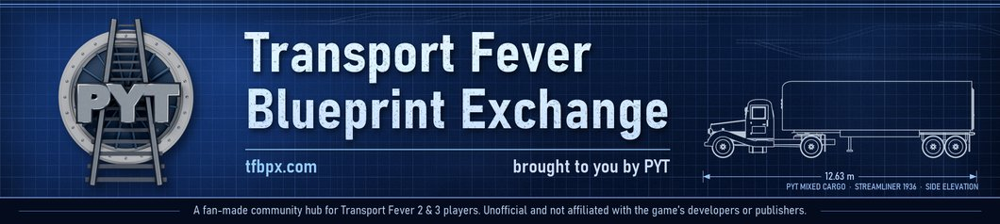

PYT mod · Transport Fever 3 · free on mod.io
PYT - Drone v1.1
Cargo drones for TF3: a Drone Base, a 16-pad Distribution Centre, a 10-bay Drone Tower and five drones -- General Cargo included -- that fly over the traffic. Tune speed, noise, battery and crew your way.

What it does
A Drone Base, a 16-pad Distribution Centre, a 10-bay Drone Tower and five cargo drones — from 2020.
PYT Drones — a PYT (Play Your Transport) mod by Epod. Version 1.1.1.
"When the city is jammed, your job is still the same: get the people their goods.
You have the problem. PYT - Drone has the solution."
What you get
- Drone Base — buy and maintain your drones: five loading pads and a hangar with an opening roof.
- Drone Distribution Centre — the central hub: rooftop pads, plus up to three Pad Wings (Configure) for 16 drones at once, with maintenance like the Tower.
- Drone Tower — ten numbered bays spiralling up a slim city tower, with a solar-roof entrance. Small footprint, maintenance included.
- Five drones — Goods, Bulk, Liquid, Flatbed and the new General Cargo drone, which carries anything but people. 250 km/h, as loud as a working drone (turn it up to full rotor, or down to a whisper), in the flag's blue and yellow — or any colour you pick.
- A Battery card on every drone — watch it drain in flight and fast-charge on the pad.
- Every pad works for you — a new line uses all the pads of a drone station by itself.
- Ground crew — open 5, 10 or 15 jobs at a station. Real townspeople come to work, and the more turn up, the faster the loading, the bigger the maintenance circle — and the further a Tower or Distribution Centre delivers (up to double).
- Change your mind any time — click a drone station: pad direction (arrows) and ground crew swap on the spot.
HOW TO START (2020 or later)
- Air menu > the PYT Drones tab > Drone Base — build it near an industry. It's the only place that sells drones, and it maintains them.
- Drone Tower — drop it in a town, right between the buildings. Ten bays, and it maintains drones too.
- Make a line Base → Tower, buy drones at the Base and send them out.
Picked for “transport fever 3.1”
⭐ QuickNiq’s curated collection Transport Fever 3.1 gathers the mods that “really should have been features of the base game” — and PYT - Drone is in it. Thank you, QuickNiq!
Built for the big city. When the streets are full and there's no room left for another depot, a Drone Tower fits on one plot downtown and the drones fly over all of it.
 Deutsch? Eine Kurzfassung auf Deutsch findet ihr weiter unten.
Deutsch? Eine Kurzfassung auf Deutsch findet ihr weiter unten.
Your game, your way
Click PYT in the top bar > the Drones 2020 tab: Your drone network opens first. Press Settings at the bottom to Tune your drone empire:
- Speed
- Noise — from a whisper to a full rotor roar (default: Busy — real cargo drones are loud)
- Pollution — zero to full
- Battery range — or unlimited
- Over range — how slow a drone flies when its line's hops are longer than its battery
- Maintenance range — grows with the ground crew, or the same for any crew
- Loading speed — grows with the ground crew, the same for any crew, or no staff boost at all
Every setting is saved with your game.
Change any of them whenever you like — Reset to PYT defaults puts them back.
Tips
- Put your hub out of town by the industries, and Towers a few km into the cities — the drones fly straight over the traffic.
- A Tower or the Distribution Centre only serves the buildings close around it — build it right among the houses and shops, not at the edge of town. A full ground crew doubles its reach.
- Keep each hop inside the battery range, or that line flies in eco mode.
- Stations a few km apart = direct flights. Very short hops make the drones circle to line up.
Coming next
- Build to order — ship steel and plastic to your Drone Base to build your fleet
- Drone plug-ins for train and truck stations, and warehouses
- A passenger air taxi
Modders: make your own drones
Any vehicle tagged pyt_drone flies from PYT Drone Bases — battery, eco mode and the players' tuning included. The PYT Drone Generator writes your model's settings for you. More tools and engine notes: tfbpx.com/resources.html
Watch it
▶ Video 1Screenshots


Auf Deutsch
Getestet mit Transport Fever 3, Build 40423.
 Ausgewählt für QuickNiqs Sammlung „Transport Fever 3.1“ – Mods, die eigentlich ins Grundspiel gehören.
Ausgewählt für QuickNiqs Sammlung „Transport Fever 3.1“ – Mods, die eigentlich ins Grundspiel gehören.
 Neu in 1.1.3: Auf der PS5 stürzte die Oberfläche ab — behoben.
Neu in 1.1.3: Auf der PS5 stürzte die Oberfläche ab — behoben.
⏳ Dieses Update wartet noch auf die Freigabe — zum Download steht noch 1.1.2 bereit. Auf dem PC läuft sie einwandfrei. Konsolenspieler: bitte das Fenster erst öffnen, wenn das Update da ist.
- Kurz gesagt: Auf der PS5 das Drohnen-Fenster und das PYT-Neuigkeitenfenster bringen die Oberfläche nicht mehr zum Absturz. Auf dem PC ändert sich nichts
- Danke: an Maxmadimus, dessen Meldung bei Pay Your Tolls den Fehler fand
Germany is PYT's biggest supporter: more of our players come from Germany than from any other country. Since you back us the most, it's only fair you get the brief in German too. Spot some clumsy German? Tell us in the comments!
Danke, Deutschland! Die meisten PYT-Spieler kommen aus Deutschland – ihr seid unsere größten Unterstützer. Da ist es nur fair, dass ihr die Kurzfassung auch auf Deutsch bekommt. Unser Deutsch ist nicht perfekt: Wenn euch ein holpriger Satz auffällt, schreibt es gern in die Kommentare – wir freuen uns darüber.
Worum es geht: Fliegt eure Fracht über den Stau. Eine Drohnenbasis, ein Verteilzentrum mit 16 Landeplätzen, ein schlanker Drohnenturm mit 10 Buchten und fünf Frachtdrohnen – ab 2020. Wenn die Stadt verstopft ist, passt der Turm auf ein einziges Grundstück, und die Drohnen fliegen über alles hinweg.
Die Oberfläche im Spiel ist noch auf Englisch.
So geht’s:
- Im Luftfahrtmenü den Reiter PYT Drones öffnen und die Drone Base nahe einer Industrie bauen – nur dort gibt es Drohnen zu kaufen
- Den Drone Tower mitten in die Stadt setzen
- Eine Linie Base → Tower anlegen, Drohnen an der Base kaufen und losschicken
Pending: version 1.1.4
Waiting for mod.io’s approval. A PC copy is on the early-access page; it comes off once mod.io approves.
Latest update
1.1.3 — CONSOLE FRIENDLY
⏳ This update is pending approval — the current version for download is 1.1.2. It works fine on PC. Console players: please don’t open its window until this update is live.
Our windows politely asked the PlayStation for a close button. The PlayStation doesn't have one, took offence and walked out — taking your whole interface with it. We've had a word.
- In plain terms: on PS5, the drone panel and the PYT news window no longer crash the interface. On PC nothing changes
- Thanks: to Maxmadimus, whose Pay Your Tolls report found it
📜 Every update so far, in English and German: tfbpx.com/pyt-drone-history.html
Waiting for mod.io’s approval? Get it now for PC — a hand-install zip, removed once mod.io approves.